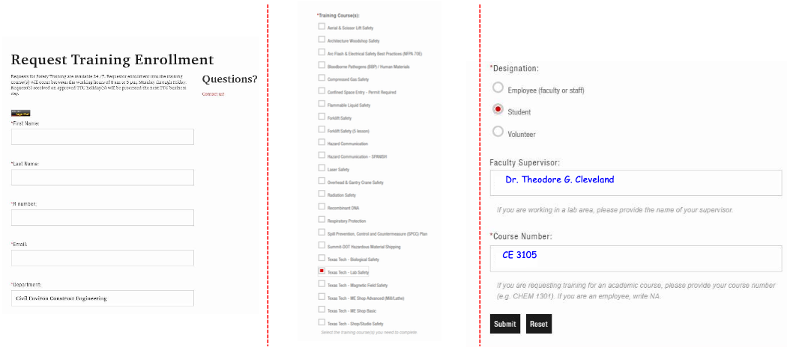

0.0 Safety Considerations#
While safety is a broad topic it is largely the management of uncertainty - more uncertain, more effort at mitigation. What follows is an examination of safety considerations in engineering design, then onto specific safety rules for CE 3105.
Why Safety Matters in Engineering#
As engineers, we are tasked with solving problems, but those solutions must also be safe for users, the environment, and the general public.
Key Points:
Public Safety: Engineering designs must ensure public safety and minimize risks. For example, bridges must support weight under various conditions, electrical systems must prevent fires, and products should not harm users.
Regulatory Compliance: Engineers must meet safety standards set by industry and governmental agencies, like OSHA or the National Institute of Standards and Technology (NIST).
Professional Responsibility: According to the NSPE Code of Ethics, engineers must hold paramount the safety, health, and welfare of the public. This is non-negotiable in any project.
Risk Assessment and Hazard Identification#
The first step in ensuring safety is to identify potential hazards and assess the risks they pose. This is often done through methods like Hazard Analysis or Failure Mode and Effects Analysis (FMEA).
Key Points:
Risk Assessment: Involves identifying potential failure modes, estimating their likelihood, and evaluating their impact.
Types of Hazards: Hazards can be physical (mechanical failures), chemical (toxic releases), environmental (natural disasters), or human-related (operator errors).
Design Phase Considerations: Safety assessments must be built into the design phase, not after. If you find and address hazards early, you can design them out of the system.
Choosing the right materials, and using enough
For a bridge design, risks like material failure, overload, and seismic activity must be considered and mitigated.
Understanding Uncertainty in Engineering#
Uncertainty comes from a variety of sources. It can stem from:
Inherent Variability: Natural systems, like the weather, water flow, or soil conditions, are not perfectly predictable. For example, in structural design, the load variability from wind, earthquakes, or traffic introduces uncertainty into our calculations.
Lack of Knowledge:When dealing with new technologies or materials, we often lack complete information about how they will perform over time. In emerging fields like renewable energy, for instance, engineers must consider the uncertainties in long-term performance data for materials like solar panels or batteries.
Modeling Limitations: The models we use to simulate behavior often make assumptions that introduce uncertainty. Simplified models may fail to capture complex interactions between different factors, such as in fluid dynamics or thermal simulations.
Human Factors: Uncertainty also arises from human error—whether it’s operational mistakes, maintenance lapses, or incorrect assumptions during design and construction(therefore encompassing “lack of knowledge” and “model limitations” as human error).
In each of these cases, engineers manage uncertainty by adopting risk mitigation strategies. As uncertainty increases, so should our efforts to ensure safety.
Uncertainty and Safety Effort—A Proportional Relationship#
A key principle: The greater the uncertainty, the greater the effort required to mitigate risk. Strategies include:
Conservative Design: When uncertainty is high, we must design conservatively by increasing safety margins. This means designing structures to withstand conditions far beyond what we expect, just in case something unpredictable happens. Example: In earthquake-prone areas, buildings are often designed to handle seismic forces that are much higher than the most severe quake on record, accounting for the uncertainty in predicting future events.
Redundancy: In situations with high uncertainty, engineers often use redundant systems to add layers of safety. Redundancy ensures that if one system fails, others can take over. Example: In aviation, where uncertainty is high due to changing weather and complex mechanical systems, airplanes are designed with multiple engines, backup controls, and emergency systems.
Advanced Monitoring and Feedback: One way to deal with uncertainty is by using real-time monitoring systems to gather data and adjust operations based on current conditions. Example: Large infrastructure projects, like dams and bridges, are equipped with sensors that monitor structural health, giving engineers critical information about how the system is performing under real-world conditions.
Worst-Case Scenario Planning: When uncertainty is significant, engineers must evaluate worst-case scenarios and design systems that can handle extreme but possible conditions. Example: In chemical engineering, plants are designed to withstand potential explosions or hazardous material releases, even if the likelihood of such events is low.
Safety Considerations in Uncertain Environments#
When uncertainty is present, safety is about managing risk proactively. Here are some strategies to consider:
Probabilistic Risk Assessment (PRA): Instead of assuming fixed outcomes, PRA quantifies uncertainty by assessing the probability of various outcomes and their potential impact. It’s used in high-risk industries like nuclear energy or aerospace.
Design for Flexibility: Design systems that can adapt to changes or unknown factors over time. For example, a bridge might be designed with expansion joints that allow for movement in response to unexpected loads or shifts in the earth.
Robust Design: Ensure that the system can withstand a range of conditions without failure. A robust design doesn’t just perform well under expected conditions; it holds up under the unexpected as well.
Iterative Testing: With high uncertainty, engineers often perform multiple rounds of testing and simulation. Each test reduces uncertainty by providing more data, leading to refinements in the design.
Operator Training: Human errors can be mitigated with training and awareness.
Safety considerations are more critical when there is more uncertainty.
The higher the uncertainty, the more effort is needed to ensure that our designs can withstand unpredictable conditions. Whether through conservative design, redundancy, or worst-case scenario planning, we proactively address uncertainty to protect the public (or ourselves).
Designing for Safety—Key Strategies#
Strategies to incorporate safety into engineering designs include:
Redundancy: Incorporating redundant systems means that if one part fails, another system can take over to prevent disaster. For example, airplanes have multiple engines, and electrical systems often have backup power sources.
Fail-Safe Designs: Fail-safes are mechanisms that automatically bring a system to a safe state in the event of a failure. An example is a circuit breaker in electrical systems, which cuts power when a fault is detected.
Safety Margins: Engineers use safety margins to ensure that structures or systems can withstand conditions beyond what they’re designed for. For example, a bridge may be designed to carry twice the maximum expected load to account for unforeseen stresses. (“When in doubt built it stout!”)
Ergonomics and Human Factors: Designs must also account for human error. Equipment, interfaces, and systems should be intuitive and designed with the user in mind to minimize the chance of misuse.
Examples:
In machinery design, guards or automatic shut-offs to protect operators from injury are essential safety measures.
In the laboratory, safety briefings, PPE, and a pre-written experimental procedures are essential safety measures.
Safety Standards and Regulations#
Every engineering discipline is guided by safety standards that must be adhered to. These standards are set by industry organizations, governmental bodies, and international agencies.
Key Points:
ISO and ANSI Standards: Many industries are governed by ISO or ANSI standards that ensure products and processes meet minimum safety requirements.
Industry-Specific Standards: Fields like civil, electrical, and mechanical engineering have their own specific safety guidelines, such as building codes, electrical safety standards (NFPA 70), and machinery safety (ISO 12100).
Regulatory Bodies: Agencies like the Occupational Safety and Health Administration (OSHA) and Environmental Protection Agency (EPA) enforce safety standards to protect workers, the public, and the environment.
Warning
Engineers deal with enormous forces and short response times.
If you cannot put enough mass between you (or your clients) and the force, then you need to locate yourself outside the line-of-action of that force.
Because accelerations happen fast, getting out of the way after the force begins to exhert its influence is not feasible; you need to be outside the line-of-action, or have enough mass between you and the force.
Eye protection is a simple example of putting mass between you and the force (usually chemical energy - but you get the point)
Remote control is a simple example of getting out of the line of action. Its quite possible to operate with phenomenally dangerous forces, if you can remember to get away from of the line of action! Even if an authentic accident occurs, the loss of life and limb is greatly minimized.
The Cost of Failing to Address Safety#
The cost of ignoring safety in engineering design can be catastrophic. Beyond the obvious risk to human life, there are also financial, legal, and reputational consequences.
Key Points:
Human Cost: The primary risk is injury or death. Designs that fail to account for safety put lives in danger.
Legal Consequences: Failing to meet safety standards can lead to lawsuits, fines, and legal liability for companies and engineers.
Reputation: A single failure can damage the reputation of a firm or an engineer for years to come. Public trust is hard to regain after a safety-related disaster.
An Example:
The Tacoma Narrows Bridge collapse in 1940 is a classic example of engineering design failure due to inadequate knowledge of wind-induced vibrations. While there was no loss of life, the collapse led to significant financial losses and a complete redesign of suspension bridges. A laboratory study may have identified the wind induced vibration issue but the error was nearly repeated with the Fred Hartman Bridge in Baytown, Texas - fortunatly by the 1990’s engineers recognized a problem and directed a lot of research to address the nearly identical issue, for example Investigation of Wind-Rain-Induced Cable-Stay Vibrations on Cable-Stayed Bridges
Laboratory Safety#
Safety is of paramount importance in CE 3105 Fluids Laboratory
Students are required to adhere to all safety protocols and procedures while in the laboratory
Students not adhering to safety procedures or indulging in acts that violate laboratory safety standards will be expelled from the laboratory and may not allowed to participate in future experiments.
Students violating safety rules will be reported to appropriate authorities
Safety violations may also result in academic penalties including receiving a failure grade in the class
Note
Directives issued in the laboratory by the instructor or his/her designee (Teaching Assistant) are to be followed immediately. You can treat the directive the same way as you would follow airline crew instructions. Failure to follow instructions earns you a chance to take the course another semester or at another university.
Laboratory Safety Rules#
General Principles#
Students must exercise common sense when handling equipment in the lab.
All CE 3105 experiments deal with water and laboratory equipment run on electricity
Water and electricity don’t mix well
Don’t become a conductor; keep water away from electrical connections
Don’t earn a Darwin award or a spot on Dumb Ways to Die
The 110V single-phase sources are GFI protected; the 220V 3-Phase (the pump performance curve station is not)
Note
Electricity leakage is sometimes detected by a slight tingling when you touch a cord or fitting. If that happens, let go! and tell the instructor or assistant so we can inspect and repair the fitting. Water leakage is going to happen, try to clean up splash and spills, and dont allow ponding to occur
Specific Rules#
You are required to follow the general principles and specific laboratory safety rules listed below:
The Instructor and Assistants have the final say with regards to safety rules (see the note above)
You are required to follow their instructions
You are required to wear closed toe shoes (No sandals)
You are required to wear full length trousers (no shorts, no skirts, no dresses)
You are required to wear safety goggles as appropriate and when asked to do so
Do not touch/operate equipment until directed to do so by the instructor
No FOOD or DRINK in the Laboratory
Do not enter the laboratory if you are intoxicated
Follow other instructions and guidelines set forth by the instructor
Laboratory Safety Training#
You MUST complete the mandatory safety training before performing any experiment in the lab
The Mandatory training for CE 3105 includes:
Texas Tech Lab Safety
You need to upload evidence of completion in the Blackboard. There is a folder for uploading your Lab Safety Certificates
You can upload valid certificates if you have taken the training previously for other classes in previous semesters
Your certificate must however be valid till the end of this semester 12/11/2025
Required TTU safety Training is valid for two years from when the certificate was issued
If you are in doubt regarding the validity of your certificate, just retake the training!!
How to Access Training#
Go to: https://www.depts.ttu.edu/ehs/Training/index.php
Then select “Request Training”
Then complete the form on the web browser with your information as shown below. Select Texas Tech-Lab Safety and submit the form. You will receive an email shortly afterwards with the required link for taking the training.

Upon completion the training site will issue a completion certificate. Upload that certificate to Canvas by the due date announced on the syllabus or by the instructor/teaching assistant. Failure to complete training will result in removal from the course.